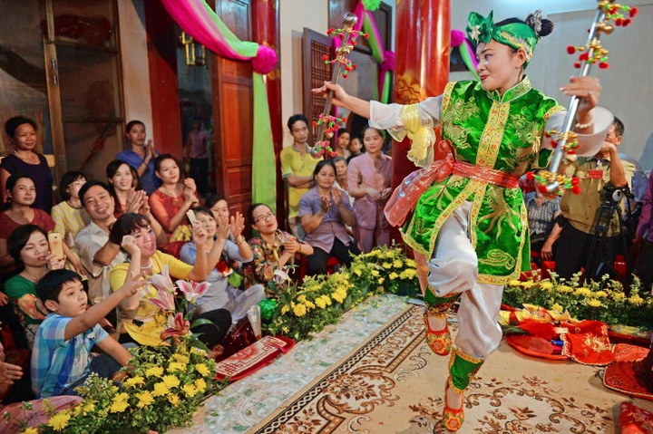
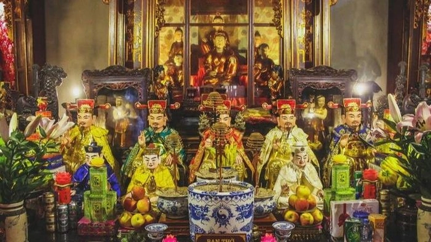
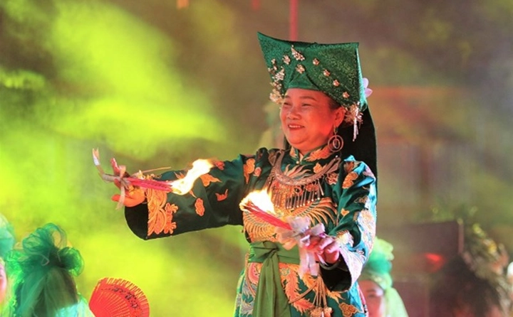

Tín ngưỡng thờ Mẫu Tam phủ – Tứ phủ và nghệ thuật hầu đồng Việt Nam
Tín ngưỡng thờ Mẫu là một trong những nét văn hóa đặc sắc bậc nhất của người Việt, thể hiện sự giao thoa giữa tâm linh, văn hóa và nghệ thuật. Đây không chỉ là biểu hiện của lòng tôn kính với các vị thần mẹ mà còn phản ánh triết lý nhân sinh, đạo lý “uống nước nhớ nguồn” và niềm tin vào sự bảo hộ của thần linh trong đời sống.
Nghệ thuật hầu đồng – một nghi lễ đặc trưng của tín ngưỡng thờ Mẫu – kết hợp âm nhạc, múa, trang phục, tạo nên những giá trị văn hóa độc đáo, đã được UNESCO công nhận là di sản văn hóa phi vật thể của nhân loại.
1. Giới thiệu về tín ngưỡng thờ Mẫu ở Việt Nam
Tín ngưỡng thờ Mẫu là một trong những biểu hiện sâu sắc nhất của tâm linh và văn hóa dân gian Việt Nam, bắt nguồn từ niềm tin vào quyền năng thiêng liêng của người mẹ – vị thần vừa che chở, ban phước lành, vừa điều hòa mọi sự trong cuộc sống. Người Việt xưa quan niệm rằng Mẫu không chỉ là hình tượng thần linh mà còn đại diện cho tình mẫu tử, lòng bao dung, sự che chở và sức mạnh bảo hộ trước thiên tai, dịch bệnh, cũng như những biến động trong đời sống thường nhật.
Tín ngưỡng này xuất hiện từ lâu đời, gắn liền với đời sống cộng đồng nông thôn, nơi con người phụ thuộc nhiều vào thiên nhiên, mùa màng và điều kiện khí hậu. Những lễ cúng Mẫu, hầu đồng hay các nghi lễ dân gian không chỉ nhằm xin bình an, mùa màng bội thu mà còn giữ gìn sự hài hòa trong cộng đồng, củng cố đạo lý gia đình và xã hội.

Qua nhiều thế kỷ, tín ngưỡng thờ Mẫu không đứng yên mà phát triển mạnh mẽ, hòa quyện với các tôn giáo lớn du nhập vào Việt Nam như Phật giáo, Đạo giáo, tạo thành một hệ thống phong phú, đa tầng lớp, vừa mang tính tâm linh vừa mang tính nghệ thuật sâu sắc. Hệ thống này không chỉ giúp người dân tìm thấy niềm an ủi, hướng thiện mà còn hình thành những giá trị văn hóa, nghệ thuật đặc sắc qua âm nhạc, múa, trang phục, và kiến trúc điện thờ, trở thành một phần không thể thiếu trong bản sắc văn hóa Việt Nam.
2. Nguồn gốc và sự hình thành của hệ thống Tam phủ – Tứ phủ
Hệ thống Tam phủ – bao gồm Thiên phủ, Địa phủ và Thoải phủ – xuất hiện từ thời Lý – Trần và dần được hoàn thiện qua nhiều thế kỷ, trở thành trụ cột trong tín ngưỡng thờ Mẫu của người Việt. Mỗi phủ đại diện cho một quyền lực tối cao trong vũ trụ: Thiên phủ cai quản bầu trời, các vì sao, thời tiết và những điều liên quan đến vận mệnh; Địa phủ kiểm soát đất đai, mùa màng, núi rừng và sự thịnh suy của cộng đồng; Thoải phủ điều hành sông suối, mưa gió và các nguồn nước, yếu tố sống còn đối với nông nghiệp và đời sống người dân.
Sau này, Nhạc phủ được bổ sung, hình thành hệ thống Tứ phủ, với vai trò điều hòa âm dương, bảo vệ sự hài hòa tinh thần và thể chất trong cuộc sống. Nhạc phủ không chỉ gắn với âm nhạc, lễ hội mà còn là nơi hội tụ của các nghi thức hướng dẫn tâm linh, giúp người dân cảm nhận được mối liên kết sâu sắc giữa con người và vũ trụ.
Hệ thống Tam phủ – Tứ phủ không chỉ là sự phân cấp thần quyền mà còn là công cụ giáo dục và hướng dẫn cộng đồng. Qua đó, người dân hiểu được trật tự tự nhiên, biết cân bằng giữa lao động và nghỉ ngơi, giữa con người và thiên nhiên, giữa lợi ích cá nhân và lợi ích cộng đồng. Thiết kế trật tự này giúp các nghi lễ, hầu đồng và cúng bái được thực hiện thống nhất, có trình tự, và đầy ý nghĩa, đồng thời tạo ra sự hòa hợp giữa thần linh, con người và môi trường xung quanh.
Sự tồn tại và phát triển lâu dài của Tam phủ – Tứ phủ còn phản ánh trí tuệ, sự quan sát tinh tế của người Việt xưa đối với thiên nhiên, xã hội và mối quan hệ giữa con người với vũ trụ. Hệ thống này không chỉ mang giá trị tâm linh mà còn là minh chứng cho khả năng tổ chức, phân tầng và xây dựng các nghi lễ văn hóa có chiều sâu, trở thành một phần không thể thiếu trong bản sắc văn hóa Việt Nam.
3. Hệ thống thần linh trong đạo Mẫu
Trong tín ngưỡng thờ Mẫu, các vị thánh Mẫu đóng vai trò trung tâm, là trụ cột trong đời sống tâm linh của người Việt. Nổi bật nhất là Mẫu Thượng Thiên (chịu trách nhiệm về trời, gắn với sấm chớp, thời tiết), Mẫu Thượng Ngàn (bảo hộ rừng núi, cây cối và thợ săn), Mẫu Thoải (chịu trách nhiệm về sông nước, biển cả, mùa mưa), và Mẫu Liễu Hạnh – vị Mẫu được nhân dân tôn thờ sâu sắc, coi như “mẹ của muôn loài” và là hình tượng biểu trưng của lòng từ bi, nhân hậu.

Bên cạnh các Mẫu, hệ thống thần linh còn bao gồm các vị quan, các cô, cậu, và linh hồn phụ trợ, đóng vai trò giúp cân bằng âm – dương, điều hòa vận mệnh con người, bảo vệ cộng đồng khỏi thiên tai và dịch bệnh. Mỗi vị thần có những biểu tượng, màu sắc trang phục, nhạc cụ và điệu múa riêng biệt, tạo nên một thế giới tâm linh đa dạng, vừa linh thiêng vừa sống động.
Nhờ hệ thống phong phú này, cộng đồng Việt Nam không chỉ duy trì được sự tôn nghiêm trong nghi lễ mà còn dễ dàng hình dung và tham gia vào các lễ hội, hầu đồng, cúng bái mà vẫn giữ được tính trật tự và ý nghĩa sâu sắc.
4. Cấu trúc điện thần và nghi lễ trong thờ Mẫu
Điện thờ Mẫu thường được tổ chức thành nhiều cấp bậc, với ban thờ chính cho các Mẫu chủ quản và các ban phụ cho những vị thần đi kèm. Trong điện thờ, không gian được trang trí công phu bằng tranh, tượng, đèn lồng, hoa quả, trầu cau, rượu và nhang, thể hiện quyền lực, uy nghiêm và sự linh thiêng của các vị thần.
Nghi lễ thờ Mẫu bao gồm việc chuẩn bị lễ vật, đọc văn khấn, thực hiện các nghi thức hầu đồng và cúng bái, đồng thời kết hợp âm nhạc, múa và trang phục đặc trưng. Từng chi tiết nhỏ trong điện thờ – từ cách sắp xếp ban thờ, màu sắc trang phục, đạo cụ đến nhạc cụ đi kèm – đều mang ý nghĩa biểu tượng, phản ánh sự kết hợp hài hòa giữa thần linh, con người và thiên nhiên.
Điện thờ không chỉ là nơi thực hành nghi lễ mà còn là không gian văn hóa, nơi lưu giữ các giá trị nghệ thuật, âm nhạc, múa và kiến trúc truyền thống, giúp người tham gia cảm nhận được sự trang nghiêm và quyền năng của các vị thần.
5. Nghệ thuật hầu đồng – Linh hồn của tín ngưỡng thờ Mẫu
Hầu đồng là phần tinh túy nhất trong tín ngưỡng thờ Mẫu, là sự hòa quyện giữa tâm linh, âm nhạc, múa và trang phục. Người hầu đồng, thông qua các điệu múa uyển chuyển, nhập hồn vào từng vị thần để thể hiện câu chuyện, quyền lực và tính cách riêng của mỗi Mẫu.
Mỗi giá hầu – hay còn gọi là “giá đồng” – tương ứng với một vị thần và có những điệu múa, nhạc cụ, trang phục đặc trưng. Nhịp trống dồn dập, tiếng chiêng vang, kết hợp với các điệu múa tinh tế và màu sắc trang phục sặc sỡ, tạo nên một trải nghiệm nghệ thuật vừa linh thiêng vừa sống động. Hầu đồng không chỉ giúp giao tiếp với thần linh mà còn là một loại hình nghệ thuật truyền tải triết lý, đạo lý và giá trị văn hóa dân gian Việt Nam.
Nghi lễ hầu đồng còn đóng vai trò kết nối cộng đồng, giáo dục thế hệ trẻ về truyền thống, lòng tôn kính với tổ tiên, thần linh, và giá trị đạo đức nhân văn sâu sắc. Đây chính là linh hồn của tín ngưỡng thờ Mẫu, làm sống dậy các giá trị văn hóa, tâm linh và nghệ thuật truyền thống.
6. Trang phục, âm nhạc và biểu tượng trong nghi lễ hầu đồng
Trang phục trong hầu đồng được thiết kế tinh xảo, mỗi giá hầu có màu sắc riêng: đỏ tượng trưng quyền lực, xanh tượng trưng thiên nhiên, vàng tượng trưng thần quyền. Các chi tiết trang phục như mấn, áo dài, khăn và đạo cụ đều được chọn lựa kỹ lưỡng để phản ánh đặc trưng của từng vị thần và tăng tính thẩm mỹ, linh thiêng.
Âm nhạc đi kèm gồm trống, chiêng, nhị, sáo và các nhạc cụ dân tộc, tạo nhịp điệu cho múa và tăng sự linh thiêng của nghi lễ. Biểu tượng trong hầu đồng như quạt, kiếm, cờ, hoa sen hay các vật phẩm tâm linh khác đều mang ý nghĩa sâu sắc, vừa thể hiện quyền lực, uy nghiêm, vừa nhấn mạnh triết lý cân bằng âm – dương, nhân – thiên.
Sự kết hợp hài hòa giữa trang phục, âm nhạc và biểu tượng tạo nên một giá trị nghệ thuật sống động và độc đáo, đồng thời giúp người tham gia và người xem cảm nhận rõ rệt sự giao hòa giữa con người và thần linh, giữa vật chất và tâm linh.
7. Vai trò của hầu đồng trong đời sống cộng đồng
Hầu đồng không chỉ là nghi lễ tâm linh mà còn là cầu nối sinh động giữa thần linh và cộng đồng. Trong các lễ hội làng, các dịp cúng quan trọng hay những sự kiện đặc biệt như khai mùa, lễ cầu an hay các ngày giỗ tổ, nghi lễ hầu đồng giúp người dân thể hiện lòng tôn kính sâu sắc, gửi gắm những mong ước về sức khỏe, bình an, thịnh vượng và hạnh phúc gia đình. Mỗi giá hầu, mỗi điệu múa, nhịp trống, tiếng chiêng đều mang thông điệp riêng, giúp cộng đồng cảm nhận rõ mối liên kết giữa con người, thần linh và thiên nhiên xung quanh.

Ngoài giá trị tâm linh, hầu đồng còn là dịp gắn kết cộng đồng, nơi mọi người tụ họp, chia sẻ kinh nghiệm sống, cùng nhau duy trì các giá trị văn hóa truyền thống. Qua nghi lễ, người già truyền dạy cho thế hệ trẻ về tri thức dân gian, đạo lý ứng xử với thiên nhiên, con người và thần linh, từ đó hình thành nhận thức về trách nhiệm cá nhân và tập thể. Không gian hầu đồng trở thành lớp học sống động, giáo dục con người cách cân bằng trong đời sống, đồng thời củng cố sự ổn định và hòa hợp trong xã hội.
Đặc biệt, hầu đồng còn đóng vai trò quan trọng trong việc bảo tồn và phát triển các giá trị nghệ thuật truyền thống. Âm nhạc, điệu múa, trang phục, đạo cụ và biểu tượng trong nghi lễ đều phản ánh lịch sử, văn hóa, tâm lý và triết lý sống của người Việt. Việc tham gia và chứng kiến các nghi lễ này giúp cộng đồng nhận thức sâu sắc về bản sắc văn hóa dân tộc, tạo nên niềm tự hào, sự kết nối giữa quá khứ, hiện tại và tương lai.
Hơn thế nữa, hầu đồng còn là công cụ tạo sự đoàn kết trong cộng đồng, xóa bỏ khoảng cách giàu – nghèo, nam – nữ, thế hệ này – thế hệ khác. Khi cùng tham gia nghi lễ, mọi người đều cảm nhận được sự bình đẳng, chia sẻ niềm tin, niềm vui và hy vọng vào cuộc sống. Chính nhờ vai trò đa chiều này, hầu đồng không chỉ là nghi lễ mà còn là trái tim, là linh hồn sống động của cộng đồng, góp phần gìn giữ và phát huy giá trị văn hóa, tâm linh của người Việt qua từng thế hệ.
8. Các lễ hội thờ Mẫu nổi tiếng tại Việt Nam
Việt Nam có nhiều lễ hội thờ Mẫu mang đậm bản sắc văn hóa dân gian, thu hút đông đảo người dân và du khách tham gia. Điển hình là lễ hội Chùa Hương (Hà Nội) với những nghi thức rước nước, hầu đồng và cúng Mẫu, lễ hội Phủ Giầy (Nam Định) tưởng niệm Mẫu Liễu Hạnh, hay lễ hội đền Sóc (Hà Nội) nổi bật với các giá hầu đồng, múa rối và các trò chơi dân gian. Mỗi lễ hội là một bức tranh sống động phản ánh sự giao hòa giữa đời sống tâm linh, văn hóa, nghệ thuật và đời sống cộng đồng.
Các lễ hội này không chỉ là dịp tôn vinh các Mẫu, mà còn là nơi giáo dục thế hệ trẻ về truyền thống, lịch sử và tri thức dân gian. Người dân được tham gia trực tiếp vào các nghi lễ, từ chuẩn bị lễ vật, xếp đặt ban thờ, cho đến nhạc múa, tạo cơ hội trải nghiệm sống động và sâu sắc về tín ngưỡng thờ Mẫu. Đồng thời, các lễ hội còn góp phần phát triển du lịch văn hóa, mang lại giá trị kinh tế cho cộng đồng và quảng bá bản sắc văn hóa Việt Nam ra quốc tế.
Tham gia lễ hội, mọi người cảm nhận được sự hòa hợp giữa thần linh và con người, giữa quá khứ và hiện tại. Không khí lễ hội vừa trang nghiêm, linh thiêng, vừa náo nhiệt và sôi động, giúp cộng đồng nhận thức rõ ràng về mối liên kết giữa tự nhiên, con người và thần linh, tạo ra sự cân bằng tinh thần và xã hội.
9. Sự hòa hợp giữa tín ngưỡng Mẫu và các tôn giáo khác
Tín ngưỡng thờ Mẫu không tồn tại độc lập mà luôn giao thoa với các tôn giáo lớn như Phật giáo, Đạo giáo và các yếu tố văn hóa dân gian. Sự hòa hợp này giúp tín ngưỡng thờ Mẫu thích ứng với thời đại, mở rộng phạm vi ảnh hưởng và vẫn giữ được bản sắc cốt lõi.
Ví dụ, nhiều đền, phủ kết hợp hầu đồng với tụng kinh Phật, niệm chú Đạo giáo hay các nghi thức dân gian truyền thống, tạo ra một hệ thống nghi lễ đa tầng. Các yếu tố kết hợp này không làm giảm tính linh thiêng mà còn làm phong phú thêm trải nghiệm tâm linh, giúp người dân dễ dàng tham gia và hiểu sâu về triết lý sống, đạo lý nhân sinh, và mối quan hệ giữa con người với vũ trụ.
Sự hòa hợp này còn thể hiện ở đời sống thường nhật, khi nhiều gia đình vừa thờ Phật, vừa giữ bàn thờ Mẫu, vừa duy trì các nghi lễ dân gian truyền thống. Điều này tạo ra một mạng lưới tín ngưỡng linh hoạt, vừa mang tính cá nhân vừa hướng tới cộng đồng, đảm bảo giá trị tâm linh được truyền lại qua nhiều thế hệ mà không bị mai một.
10. Giá trị văn hóa, nghệ thuật và tâm linh của tín ngưỡng thờ Mẫu
Tín ngưỡng thờ Mẫu Tam phủ – Tứ phủ là kho tàng văn hóa và nghệ thuật độc đáo của Việt Nam. Nghi lễ hầu đồng kết hợp trang phục sặc sỡ, đạo cụ tinh xảo, nhạc cụ dân tộc, điệu múa uyển chuyển và các biểu tượng phong phú, tạo nên một hình thức nghệ thuật sống động, vừa linh thiêng vừa tráng lệ.
Giá trị văn hóa này không chỉ giúp người dân kết nối với tổ tiên, tôn kính thần linh, mà còn lưu giữ tri thức dân gian, đạo lý ứng xử, và các bài học về cân bằng âm – dương, thiện – ác, con người – thiên nhiên. Thông qua hầu đồng, các thế hệ trẻ học được cách tôn trọng, gìn giữ bản sắc dân tộc, đồng thời trải nghiệm sự giao hòa giữa vật chất và tâm linh, giữa truyền thống và hiện đại.
Ngoài ra, tín ngưỡng thờ Mẫu còn góp phần củng cố đời sống tinh thần, tạo ra niềm tin, hy vọng và sự an tâm trong cộng đồng. Những nghi lễ, điệu múa, nhạc cụ và biểu tượng trong hầu đồng không chỉ là giá trị tâm linh mà còn là minh chứng cho trí tuệ, sáng tạo và khả năng tổ chức của người Việt xưa, làm giàu thêm bản sắc văn hóa và nghệ thuật truyền thống, đồng thời tạo nên một di sản sống động và trường tồn qua thời gian.